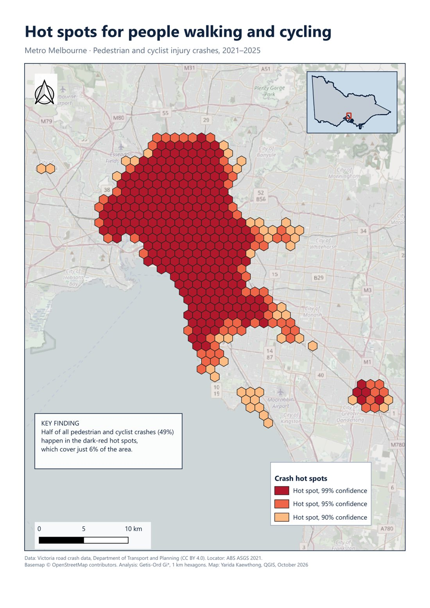
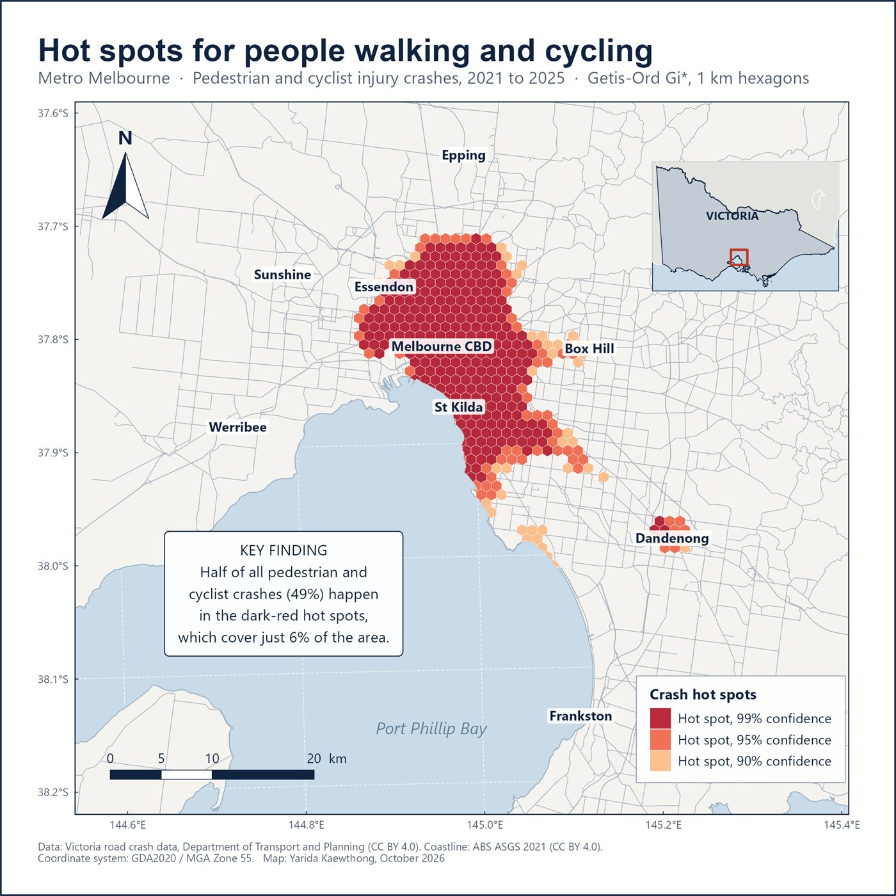
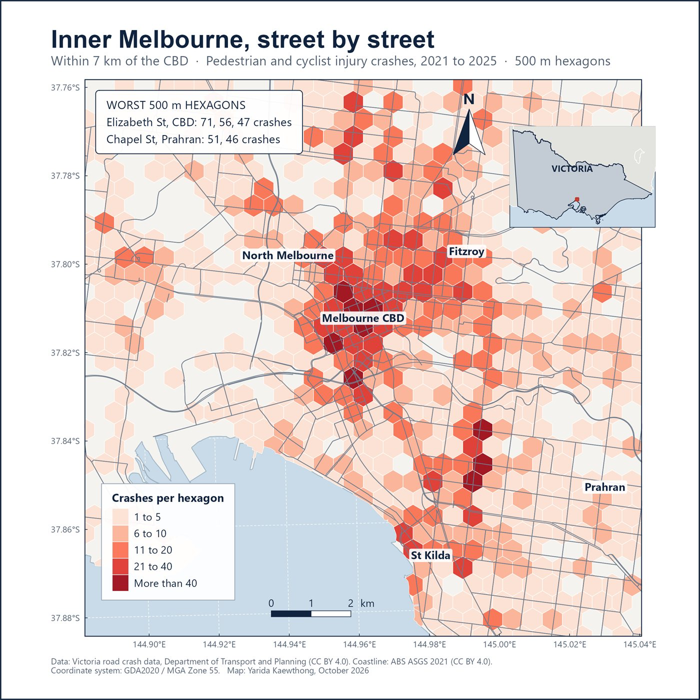
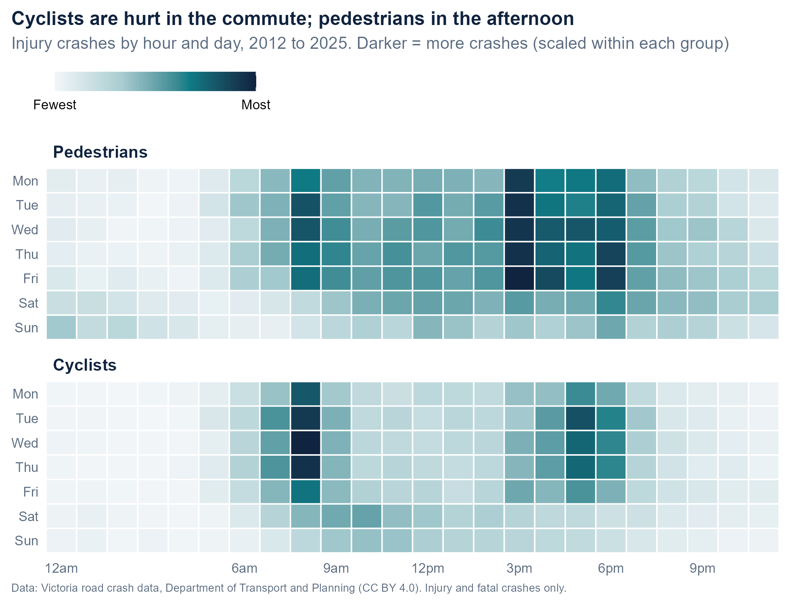
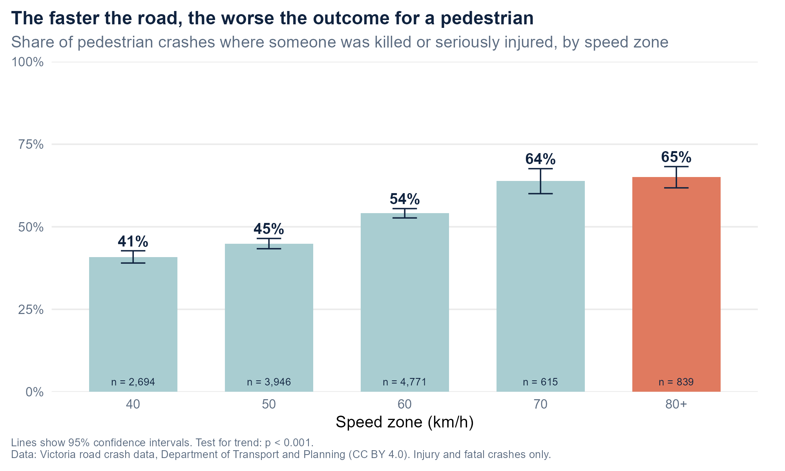
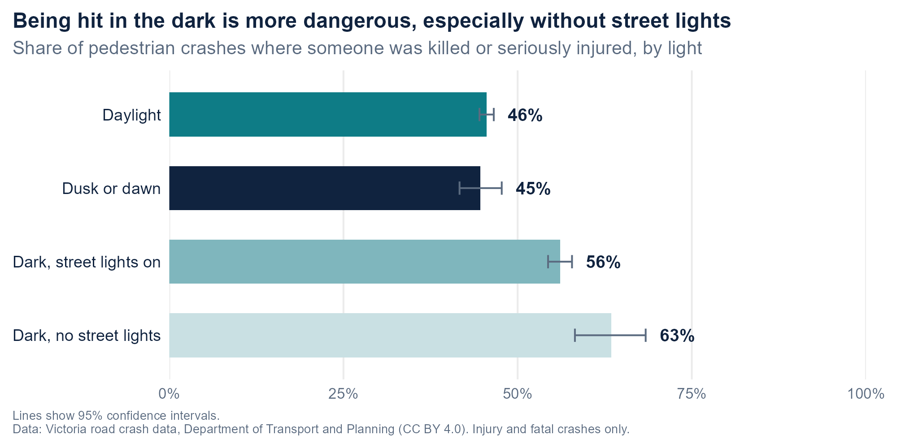
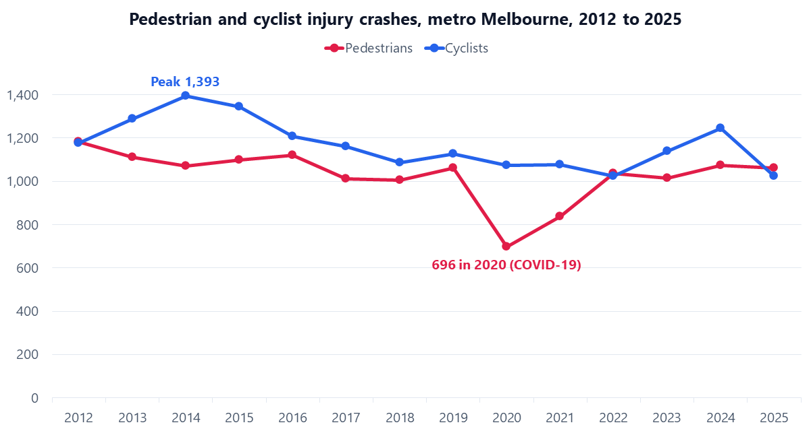

GIS · R · Road safety
Where and when are people walking and cycling most at risk in Melbourne?
People on foot and on bikes have no protection in a crash. I analysed 14 years of real Victorian crash records, more than 30,000 crashes involving a pedestrian or cyclist, to find where they cluster, when they happen, and what turns a crash into a death or serious injury.
- Problem
- Where and when are people walking and cycling most at risk in Melbourne, and what makes a crash more serious?
- What I did
- Sole author. Cleaned 14 years of Victorian crash records, ran hot-spot and injury-severity analysis, made the maps (one of them in QGIS) and wrote it up. Independent project, October 2026.
- Tools
- R (sf, dplyr, ggplot2) · QGIS · Getis-Ord Gi* hot spots · hexagon grids · confidence intervals · chi-square trend test
- Result
- 49% of the 2021–2025 pedestrian and cyclist crashes fall in hot spots covering 6% of the area. A pedestrian’s chance of serious injury or death rises from 41% in 40 km/h zones to 65% in 80+ km/h zones.
metro Melbourne, 2012–2025
covering 6% of the map
from 40 to 80+ km/h zones
What I found
-
Half the recent crashes happen in 6% of the map. A Getis-Ord Gi* test on 1 km hexagons found 273 statistically significant (99%) hot spots. They cover 6% of the area but hold 49% of the 2021–2025 pedestrian and cyclist crashes, mostly in the City of Melbourne, Yarra and Port Phillip, with a separate cluster in Dandenong.
-
Faster roads, worse injuries. The share of pedestrian crashes that killed or seriously injured someone rose from 41% in 40 km/h zones to 54% at 60 km/h and 65% at 80 km/h and above (χ² test for trend = 274.9, p < 0.001).
-
Cyclists are hurt in the commute, pedestrians in the afternoon. Cyclist crashes peak at 8 am on weekdays. Pedestrian crashes peak at 3 pm, around school pick-up time. Being hit in the dark without street lights raised the chance of serious injury or death to 63%, against 46% in daylight.
-
Dooring is a major cyclist risk. Riding into the opened door of a parked car was the second most common cyclist crash movement: 1,822 crashes, 11% of the total.
On the map
Each map is laid out like a GIS export: framed map with latitude and longitude, north arrow, scale bar, legend, a Victoria locator map and a key-finding box, with credits underneath. Click any map to enlarge it.



When and how badly




The problem
In metro Melbourne, roughly one injury crash in five involves someone walking or cycling. To protect them, a council or road agency needs to know three things: where to act, when the risk peaks, and what makes a crash more severe.
- Where do pedestrian and cyclist crashes cluster, beyond what chance would produce?
- At what times of day and week do they happen, and is it the same for both groups?
- How much do the speed zone and lighting change the chance of a serious outcome?
How I did it
Hot spots, not just dots. A dot map shows where crashes happened, not whether a cluster is unusual. I built a 1 km hexagon grid over every area with at least one crash and ran Getis-Ord Gi*, which compares each hexagon and its neighbours within 2 km against the metro average and returns a z-score. Hexagons above 2.58 are hot spots at 99% confidence.
Zoom in where it matters. Inside the hot-spot zone everything is significant, so for the inner city I switched to plain counts on a finer 500 m grid and named the worst cells by their most common road.
Severity with honest uncertainty. Serious-injury shares come with 95% Wilson confidence intervals, and a chi-square test for trend checks that the rise across speed zones is not chance.
The data
Victoria's official road crash records, published by the Department of Transport and Planning from police and hospital reports (CC BY 4.0). Every crash has a location, time, speed zone, light condition, crash movement and severity. I kept metro Melbourne from 2012 to 2025, logged every filtering step, and projected the points to GDA2020 / MGA Zone 55 so distances are in metres.
| Step | Records | Note |
|---|---|---|
| All Victorian crashes | 200,754 | 2012 to January 2026 |
| Metro Melbourne, full years | 142,875 | Partial January 2026 and 3 non-injury records removed |
| Involving a pedestrian | 14,378 | At least one pedestrian in the crash |
| Involving a cyclist | 16,357 | At least one cyclist in the crash |
| Hot-spot window, 2021–2025 | 10,428 | Pedestrian or cyclist crashes |
What it means
- Lower speeds where people walk. Moving from 60 to 40 km/h is linked to 13 fewer serious injuries in every 100 pedestrian crashes. Extending 40 km/h zones across the inner-city hot spots targets the places with the most crashes.
- Protected bike lanes and door-zone design on the commuter routes into the CBD, Yarra and Port Phillip.
- Street lighting where pedestrian crashes happen in the dark with no lights.
Limitations
- Injury crashes only. Crashes with property damage only are not in the open data.
- No exposure measure. There is no count of how many people walk or cycle in each area, so hot spots partly reflect where people walk and cycle most. They show where crashes concentrate, not where each trip is riskiest.
- Association, not cause. Faster roads also differ in design and traffic, so the speed result is a strong pattern, not a controlled experiment.
- Many tests at once. Gi* is not adjusted for multiple testing, so the 90% band is indicative only.
Key takeaways
- A hot-spot test beats a dot map. Dots show where crashes happened; Getis-Ord Gi* shows which clusters are bigger than chance would give. That turned 30,000 points into one clear message: half the crashes fall in 6% of the area.
- Speed is the clearest lever. A pedestrian’s chance of serious injury or death climbs step by step from 41% to 65% across speed zones. A pattern that consistent is worth testing formally, so I backed it with a chi-square test for trend.
- One timetable does not fit everyone. Cyclists are hurt in the 8 am commute; pedestrians around 3 pm. The same city needs different measures at different times of day.
- Say what the data cannot show. There is no count of how many people walk or cycle in each area, so hot spots partly reflect where people travel most. Stating that up front makes the findings more trustworthy, not less.
- A map is only useful if it is easy to read. I redesigned the maps several times: fewer colours, plain-language legends, a locator map and a scale bar, so a reader gets the point in seconds.
References and data sources
- Department of Transport and Planning, Victoria. Victoria road crash data, 2012 to January 2026. CC BY 4.0. opendata.transport.vic.gov.au
- Department of Transport and Planning, Victoria. Historical Annual Average Daily Traffic Volume, 2019 release, used for the main road network on the maps. CC BY 4.0. opendata.transport.vic.gov.au
- Australian Bureau of Statistics. ASGS Edition 3: States and Territories, 2021 digital boundaries, used for the coastline and the Victoria locator map. CC BY 4.0. abs.gov.au
Who provided the data: All three datasets are open government data, published free to the public by the Victorian Department of Transport and Planning and the Australian Bureau of Statistics. I downloaded them in October 2026.